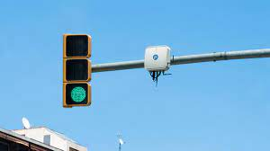
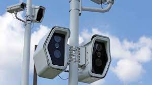
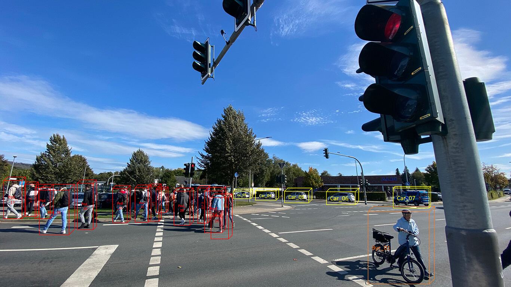

Semaforo Inteligente
Un semáforo inteligente es aquel que se gestiona dinámicamente teniendo en cuenta la función del tráfico en tiempo real, además de tener en cuenta a toda la red de semáforos relacionados, determinando el tiempo en el que debe estar en rojo, amarillo verde.


